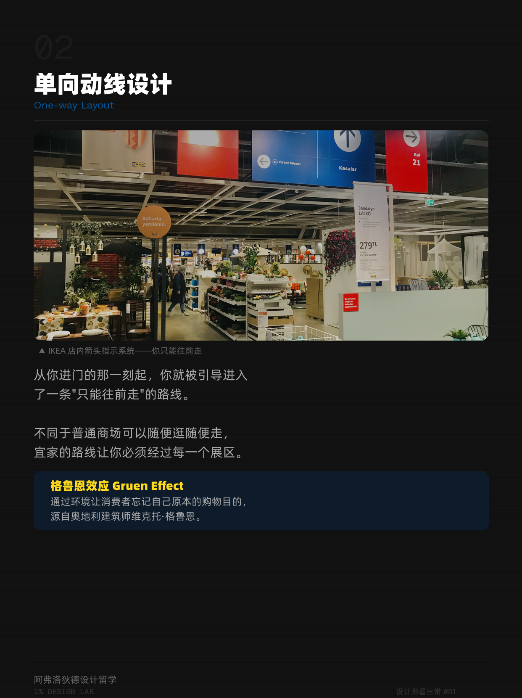
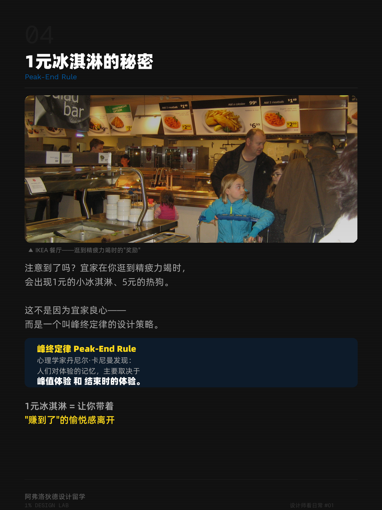

Every time you go to IKEA, isn't it the same script? You only meant to grab a mug, and two hours later you walk out five hundred yuan poorer. What pins you to that script is the one-way flow. It doesn't stop you, and it doesn't lock any doors. It just makes every step forward easier than turning back.
I'd written about this before, under a brutal title: 'IKEA's route design makes you walk three times longer.' Rewriting it properly this time, I stared at that 'three times' for a long while and asked myself where the number came from.
I couldn't answer.
So this piece takes a different approach. IKEA's flow really is worth breaking down; it's a classic of spatial design. The professional-sounding numbers I'll re-examine one by one, verifying what I can and being honest about what I can't. And beyond the numbers there's something even more worth writing about: what your body goes through on this route, where you slow down, where you're being pushed along.
Don't rush to ask 'how is IKEA tricking you.' Ask first: how many of the choices you thought were 'your own decisions' did it actually make on your behalf, using space?
IKEA's one-way layout: the one-way street under your feet
IKEA's core move is the one-way layout. From the moment you step onto that sloped entrance, the route is basically set. The ramp lifts you up and the arrows on the floor take over, and from then on forward is with the traffic while turning back is walking against it. Turning around takes real effort; IKEA never drew you a way back at all. Every section, you have to pass through.
The origin of this idea is usually traced to an Austrian architect, Victor Gruen. He was the first to imagine fully enclosed, windowless shopping malls that shut out the street and the passage of time, and the effect of making people forget why they came later got named the Gruen Effect. Gruen was real, and so is the concept.
But here's the cold water. Whether IKEA consciously designed around the Gruen Effect, or how much lostness the design could be quantified into, I've never seen a credible measurement. What the one-way layout actually explains is something much plainer: it maximizes exposure for every product. You make one loop, and nearly everything has passed in front of your eyes. This needs no psychology buzzwords; it's shelf efficiency. And inside the store you can feel a speed difference. On the main path, the crowd and the arrows hurry you forward together; one turn into a section, and the rhythm belongs to you again.

The fifteen-square-meter bedroom, with your life already arranged
None of the showrooms you see at IKEA are arranged casually; each one is a complete life scene. A fifteen-square-meter bedroom, fitted with bedside lamp, rug, and wall art, down to the book on the desk already chosen for you. Out on the main path you're being hurried along; the moment you step into a showroom, your feet slow down on their own. Standing in that little bedroom, what you're weighing is already the empty wall in your own home.
In my original draft I wrote that context effects raise your perceived value by more than 40%. This time I checked, and no primary experiment backs that 40% figure, so I cut it. The direction I still believe. Place an object inside the scene where it belongs, and your fondness for it genuinely rises. A desk lamp that looks unremarkable on its own, set inside a carefully styled bedroom, starts giving off the smell of 'I want this life too.'
This trick is worn out in digital products too. Software sellers don't sell a feature list; they sell the you that exists after using it. A SaaS landing page doesn't show you a pile of buttons; it shows a clean workbench screenshot, as if every problem had already been solved. Identical logic.


The 1-yuan ice cream, and Kahneman's peak-end rule
Right when you're about to fall apart, you run into IKEA's 1-yuan ice cream and its few-yuan hot dogs. This isn't IKEA being kind.
This is the peak-end rule. The psychologist Daniel Kahneman found that people's memory of an experience is shaped mainly by two points: the peak, the best or worst moment, and the feeling at the end. How long the middle dragged, how tired you got, those fade the fastest.
Kahneman won the Nobel Prize in economics, and the peak-end rule is among his most-cited work, so the credibility isn't in question. An ice cream at the finish line, absurdly cheap, is a pleasant ending built by hand. Once you're home, you can't recall how many kilometers you walked; you remember the sweetness in your mouth on the way out. Think back on an IKEA trip, and what surfaces is always that sweetness, plus whichever showroom caught your heart. The corridors in between, the ones that left your legs numb, dissolve into a blur.
Honest caveat: the peak-end rule itself is solid research, but claims like 'therefore IKEA makes this much more' or 'everyone is affected by it' are extensions people read into it — not the experiment's own words. Don't mistake a marketing case study for the law itself.
The peak-end rule tells you that the last moment a user has with your product does outsized work on their overall impression of you. Checkout, subscription cancellation, exit: don't slack off in these places.
The self-serve area stacks the inventory in front of you
When you finally finish the showrooms and head downstairs to the self-serve area, the shelves are tall enough to crane your neck at, the same item stacked in piles all the way to the top. Whatever leisurely picking mood survived the showrooms turns, down here, into the physical work of hauling boxes.
This is warehouse-style display: the inventory deliberately stacked up in your sight line. Its subtext is, this much must be cheap. Costco runs on the same logic.
People's judgment of a good deal is heavily influenced by visual density. Overflowing stacks subconsciously push your expectation of the unit price down. Standing in front of shelves like these, you shrink half a head on your own; you look up, then down at the price tag, and somewhere in between your mind has already conceded that it's cheap. This one needs no numbers to explain. It's a visual cue, verified over and over.
The shortcut lane, deliberately dimmed
Many people don't know that IKEA actually has shortcut lanes that skip the showrooms and lead straight to the warehouse and checkout. But the signage is made fairly easy to miss.
Why? Letting you wander through a few more sections by accident is the goal; getting you in and out fast is not. The system never lies to you. It leaves you an exit the entire way through; it just turns that exit's brightness way down. Most people with any strength left in their legs follow the arrows and walk the full route.
A single one-way layout is actually answering four people's questions at once
- Customer
- I want to browse with something to show for it, without getting lost. → A clear path, lined with temptations.
- Product
- How do I get seen? → All laid out along the path you have to walk.
- Staff
- How do I restock and guide foot traffic efficiently? → One unified flow; the layout itself is the management tool.
- Operations
- How do I turn 'just here for a mug' into 'also spent five hundred'? → Fill the path with things he never planned to buy.
I brought this logic back to digital products
If you build products and you visit IKEA, what you should steal is its understanding of 'path.' The rugs you can't steal, and you'd have no use for them anyway.
- Path as display. Does your onboarding lay each piece of core value along the path users have to walk? Or does it bury the good stuff three menus deep and wait for users to dig it up? IKEA never gives you the chance to dig; it builds the road right up to the product.
- Scene-driven presentation. That SaaS landing-page workbench screenshot is exactly this move. For your own first screen, feature list or the scene after adoption: worth choosing again.
- Give them a good ending. At the final step of a key task, have you left the user a pleasant peak-end? Order complete, subscription cancelled, exit: those pages are where your 1-yuan ice cream should be standing.
But I want to give myself a warning too. IKEA is retail, and retail's ultimate metric is getting you to buy more. If you build a productivity tool, copying 'make them linger' is basically a crime; a tool's job is to help people finish fast and leave fast, muttering something nice about you on the way out. The test is a single question: does your product make money from users staying, or from users getting things done? The first can learn from IKEA; the second should hurry up and shorten the road. Porting retail logic into tools without thinking is the most common design misuse I've seen.
Next time you visit IKEA, give yourself three observations
- Count the forks: on the path you're walking, how many exits are there where you 'could actually leave'? Where has IKEA hidden them?
- Look at the ending: the last time you paid before walking out, was it that 1-yuan ice cream, or something you never intended to buy?
- Hunt for scenes: of the things you ended up buying, how many were sold to you by 'the life scene in the showroom,' rather than by genuine need?
- Analyzing IKEA's flow as a spatial design case study is an established topic of public discussion within the design field. Victor Gruen and the 'Gruen Effect,' along with Daniel Kahneman's 'peak-end rule,' are all verifiable real people and theories.
- However, the precise figures in the original draft — 'walks three times longer,' 'perceived value up over 40%,' 'purchase probability up 15%' — I could not trace back to any primary experiment, and have either deleted them or flagged them as unverified in the article.
- This article is a design and behavior analysis based on publicly visible IKEA store layouts, and does not represent IKEA's official design intent.